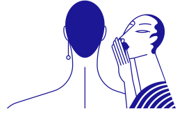

Need a Hand?
Our design team is available daily via text and chat, 9am-9pm EST, and our client care team from 9am-6pm EST

Frequently asked questions for Round Cut Diamonds
We have samples of our settings made so that you can see them from the comfort of your home!
They are sterling silver and plated with a CZ center stone.
This lets you try your Frank Darling rings at home with no commitment to choose immediately.
We have limited quantities of each setting as we ship and restock daily. Please put your email
down to get notified of your faves coming back in stock!
This program allows you to try the rings for 5 days, after that they must be returned to us
using the return label provided. Please be sure to return them within that window as there is a
$450 fee for unreturned kits!
The carat weight differs depending on the collection, with most designs featuring a center stone equivalent to 2 carats. Detailed dimensions can be found on the packing list.
All our try at home samples come in size 6.5 for engagement rings and can range to size 9 for thicker bands. Unfortunately, we're not able to offer custom sizes at this moment, but most people still find the service very helpful in assessing stone size, setting height, and overall design. We recommend trying the ring on a different finger if it's a bit too small or big to get a feel for how it fits.
Absolutely! Our free try-at-home service includes a zip-tie style ring sizer to measure your ring size. If you're still unsure, we recommend scheduling a virtual consultation with one of our designers here. They'll walk you through the finger-sizing process, as well as answer any questions you have on setting options, stone selection, and the overall process from try at home to custom ring!
Occasionally, USPS scans the kits prior to delivery, because, USPS... Try not to stress. Allow an additional 1-2 days for your kit to reach you. It was likely mistakenly delivered to a neighbor or could arrive shortly after the scan. If it hasn't arrived in a day, chat in on the website or email us at hello@frankdarling.com, and we're happy to help track it down or ship a new one on the off chance it's lost in the mail room.
You're welcome to keep the kit for 5 business days, and then please return them with the enclosed, prepaid return label. If you need more time, chat in on the website or email us at hello@frankdarling.com and we'll do our best to extend the return window by a few days.
Sadly, all good things must come to an end! If you need a little more time or are missing your return label, chat on the website or email us at hello@frankdarling, and we're happy to help. Unreturned samples are subject to a $450 fine.
Chat on the website or email us at hello@frankdarling.com and we can send you a new label!
We can only wish. Prohibitive shipping costs have prevented us from expanding our try at home program outside the US. We know, it sucks. But hey, why not book a virtual consultation with one of our designers? We'll model the settings, dish on diamonds, and answer any questions you may have.
Waited a little too long to pull the trigger? Not sure what they want? Snag one of our $300
placeholder rings to pop the question before purchasing the ring. These photo-ready, plated,
sterling silver and cubic zirconia body doubles are nearly indistinguishable from the real thing
and come with a $100 credit towards your future heirloom if purchased within 3 months of
receiving the placeholder.
Post proposal, we recommend keeping it as a travel ring for a worry-free honeymoon. All
placeholders come set with a standard 2 carat stone and are available in sizes 5 - 7.5.
Placeholder rings take 7-10 business days to make, so plan accordingly for
your perfect proposal!
At the moment placeholder rings are available for US customers only.
Unfortunately, those perks are reserved for the real deal. The delicate nature of the
placeholder material (sterling silver) makes these rings more susceptible to damage compared to
our fine jewelry.
Much like demi-fine jewelry, it's crucial to handle them with extra care to prevent excessive
pressure on the band, which could result in deformation or the pavé popping out.
Although sterling silver placeholders age more gracefully, those plated in 14k yellow or rose
gold will tarnish over time.
Starting at $2,000, our custom jewelry is priced based on a mix of materials, labor, and, of course, the center stone! While we don't charge design fees, we do ask the center stone to be purchased through us and we aren't able to work with heirlooms or stones purchased from other online retailers at this point in time. While we design all types of jewelry, we're most competitive price-wise when it comes to diamond and gemstone-forward jewelry.
Unfortunately, we exclusively work with stones purchased through Frank Darling as our settings
are made to order, tailored specifically for the center stone. If you're still in the process of
selecting a diamond and struggling to find the right one, we offer an extensive selection of
unlisted inventory. Just reach out to chat with one of our
diamond experts, and they'd be delighted to help you find the perfect stone.
If you're in possession of an heirloom, we recommend finding a local jeweler where you can
easily drop off and pick up the gemstone. They specialize in this type of work and would be best
suited to help you find or design a home for your diamond.
Great things take time! Typically, collection styles will be ready to ship approximately three
weeks after you place your order. Throughout this period, you'll receive regular updates about
your order, keeping you in the loop if there are any changes to the estimated ship date.
Before shipping, you'll also get a final address confirmation email that you'll need to sign off
on.
For more intricate, custom styles, we suggest setting aside 5-6 weeks for the design and making
process, and even more if you're envisioning something entirely out of the box. Patience pays
off!
Rushes are eligible on a case by case basis for collection styles and stones listed in the
United States. This is a nonrefundable deposit of $350 for completion faster than our standard
timeline, please reach out to your designer or hello@frankdarling.com with any questions
regarding order eligibility and timeline!
Absolutely. All of our settings can be customized. Get started by requesting a free sketch, booking a consultation, or chat in the website to talk to a designer!
Start with the Quiz:
Start your journey by taking the
ring quiz. It's a quick and easy way to kick off the design process.
Ready to Dive In? Book a Consultation:
When you're ready to get down to the nitty-gritty, book a consultation with one of our talented
designers! Aim to start this exciting process about five weeks before your desired ring delivery
date.
Collaborate over Email:
Your designer will work closely with you over email to bring your ring design to life through a
combination of reference photos and high-fidelity sketches.
Stone Selection Made Easy:
Once your ring design is solidified, your designer will curate a selection of stones for you to
choose from based on your quality preferences and budget. Our selection includes natural
diamonds, lab-grown diamonds, moissanite, and gemstones. Feel free to inspect stones in person
at our office or request additional photos and videos to aid in your decision-making.
Order Placement and 3D Model Creation:
After placing your order, we'll design a 3D model of your ring, a process that takes about a
week. Once ready, we'll send you a digital PDF for approval, complete with a rendering of your
ring. If you prefer a hands-on preview, we can also send a 3D printed plastic prototype for fit
testing and design preview.
Approval and Ring Production:
Once you give the green light to the CAD mockup, we'll make your ring! This typically takes
around three weeks, ensuring meticulous attention to detail in bringing your bespoke piece to
life.
Each Frank Darling ring includes two rounds of complimentary minor revisions, allowing for
adjustments like band thickness, setting height, side stone size, and other details that do not
entail a complete overhaul of the CAD model.
Should you completely change your mind, necessitating an entirely new CAD model, subsequent
models are $350. This covers the new ring design, a second fit sample, and two additional rounds
of revisions. Unfortunately, it's nonrefundable and can't be credited toward the final ring.
While you can purchase a second CAD mockup for $350, the deposit is non-refundable, and only
one CAD model can be credited toward the final purchase.
If you're feeling uncertain, we recommend talking to your designer about your concerns, and
going for the design you're most confident in — chances are you'll love it.
If you don't, two rounds of minor revisions are included free of charge, and if you still hate
it, you can always opt to pull the trigger on that second model at a later point in time.
Regrettably, CAD deposits are non-refundable and can only be applied as credit toward the specific ring they were originally designed for.
Unfortunately, shipping logistics and customs complexities currently prevent us from offering this option. But, don't despair! If you're set on seeing your design before finalizing, ask your designer to print a sample that can be showcased over a video chat. It's a close second to an in-person experience. Additionally, we can send you photos and videos before shipping to ensure the ring is as flawless as the proposal.
Quotes for custom settings and bands (excluding the center stone) are valid for two weeks and can change based on the price of materials and labor.
Center Stones:
Unfortunately, at this point in time, we're no longer offering custom cut center stones due to
our inability to guarantee the exact grades post-certification.
Side Stones:
We do offer custom cut side stones. The timeframe for these typically ranges from 2-8 weeks,
contingent on the type and availability of the rough material. Incorporating custom cut side
stones extends the overall production time to 5-13 weeks, depending on the project's complexity.
Currently, we can accommodate custom cut lab-grown diamond side stones and
gemstones. Custom cut side stones are eligible for return under our returns policy, with a
$250 restocking fee.
We believe that your engagement ring should last you a lifetime of love. That’s why we
recommend picking stones that are rated 9 and up on the Mohs
Scale of Hardness. This nifty scale grades gemstones on their ability to withstand
scratching on a scale of 1 to 10 with 1 being akin to the softness of chalk and 10 being
the hardest of the hard.
And when it comes to hard, you can’t get much harder than diamonds. These beauties rank 10/10 on
the Mohs scale proving that nothing is quite as tough as a diamond. Not into diamonds? You have
options! Moissanite (9.5), sapphire (9), and ruby (also 9) all rank highly as well without
sacrificing on that ooh-la-la sparkle. Anything lower than 9 can run the risk of being scratched
during daily wear and tear which can result in higher costs down the road, not to mention
heartbreak. But we know that the heart wants what it wants so we're happy to work with and set
any of the following precious center and accent stones.
Approved center stones
Natural and lab diamond
Moissanite
Natural and lab sapphire
Natural and lab ruby
Lab emerald
Natural emerald on a case-by-case basis and dependent on the chosen setting
Approved side stones
Natural and lab diamond
Sapphire
Ruby
Emerald
Alexandrite
Amethyst
Aquamarine
Citrine
Garnet
Peridot
Tanzanite
Topaz
Tourmaline
We’re known for our light, airy bezels that balance durability with aesthetics. Our bezels typically finish between .5mm and 1mm. However, the final bezel width is influenced by the size of the center stone and can vary due to hand finishing. A general rule of thumb is the larger the stone, the thicker the bezel.
Our thinnest band option is 1.5mm wide by 1.7mm tall. For diamonds and gemstones over 3 carats,
we recommend bumping the band thickness up to 1.8mm. This will proportionally give a similarly
thin look but is better suited to securely holding the center stone.
While you might be tempted to go sleek and slender with a ring thinner than 1.5mm, it may not be
the wisest choice. Why? Well, anything less than 1.5mm will have a tough time holding up to the
daily wear and tear, and may result in your setting getting quite literally whacked out of shape
simply by just grabbing something a little too hard. So make sure your ring is at least 1.5mm or
larger. This way, it's bound to last through any champagne toasts, spontaneous dance parties,
and Insta-worthy moments you throw at it.
Milgrain detailing on the bezel or band edges is done with a tiny toothed wheel, creating a
very fine crimped pattern.
In contrast, milgrain on the prongs or basket is typically incorporated into the CAD design and
cast, as these areas are challenging to reach by hand.
If you choose a custom setting, any milgrain featured in the CAD mockup will be cast, and any
milgrain not depicted will be meticulously applied by hand during the crafting process.
While the final prong thickness is contingent on the setting, prong type, and center stone size, typically, prongs finish between 0.75mm and 0.9mm at their widest point.
Our classic prong finish features a delicate and petite claw that tapers to a point. This
option is the most discreet, designed to maximize the surface area of the stone.
Additionally, we offer other prong styles, including round prongs (sometimes called ball
prongs), square prongs (sometimes referred to as tab prongs), and double claw prongs (two tiny
claws set side by side).
When you're ready to place your order, feel free to chat
with us on our website to request a custom prong finish, or you can email us at
hello@frankdarling.com.
When considering how high is too high-the sky really is the limit. Just be sure to remember
that Medium and High Profile rings are more prone to hitting more surfaces and thus are more
susceptible to damage.
Another thing to consider? How often you find yourself using your hands in daily life so ask
yourself: are you wild with your hands? Do you tend to use them a lot in your day-to-day
activities? If the answer is a resounding yes, a low-profile ring may be the perfect setting for
you. After all, you want to show off that ring without the worry of it taking damage - ain't
nobody got time for that.
Ultimately, your perfect height is going to be a balance of form and functionality. Whether
you're reaching for the stars or keeping those feet on the ground, it's all about what makes you
feel the most fabulous while keeping your bling safe and protected, so trust your gut and go for
what feels right for you.
Thin may be in, but chunky's having a moment. So, here's the skinny on which band width to
choose and why.
1.5mm: Modern and minimal
Designed to accentuate the diamond.
Ideal for stones under 3 carats.
Requires a bit more care to maintain its shape.
1.8mm: Timeless and classic
Balances aesthetics and durability.
Appears visually thin while providing support.
A great choice if the absolute thinnest band isn't a top priority.
2.0mm: A little something extra
More durable.
Ideal for those seeking a more gold or pavé forward look.
Provides extra security for larger stones.
2mm+: Chunky and gold forward
Easy on the eyes and comfortable to wear.
Embraces a bold and gold-centric aesthetic.
A statement piece.
All Frank Darling fine jewelry is lovingly handmade in NYC.
Well, here at Frank Darling, we care about the planet. So we use 100% recycled gold and
platinum for our jewelry. It’s reclaimed from post-consumer sources and re-refined. It’s exactly
the same as newly mined gold (yes, gold is mined out of the Earth just like diamonds!) without
the environmental damage. Our sources include recycled jewelry, industrial products, and
electronics.
Our 18K rose gold is 75% gold, 24% copper, 1% silver with trace elements of zinc. The zinc
accentuates the color of the copper and gives it a lovely blush pink hue.
Our 14K yellow gold alloy is 58% gold, 5% zinc, 5% silver, and 32% copper.
Our 18K yellow gold alloy is 75% gold, 15% silver, and 10% copper.
Our 14K white gold alloy is 58% gold, 23% copper, 9% zinc and 10% nickel.
Our 18K white gold alloy is 75% gold, 14% copper, 5% zinc and 6% nickel.
Our platinum alloy is 95% platinum and 5% ruthenium, another member of the platinum family.
Yes, much like most fine jewelry, our white gold is plated with a thin layer of rhodium to give
the metal a bright, white gold.
The downside of plating is that it doesn’t last forever. Sweat, wear and tear, chlorine, and
your natural body chemistry and PH balance will shorten the lifespan of the plating.
Generally, rhodium plating lasts about 6 months, at which point the natural color of the white
gold will begin to show through. Part of caring for a white gold engagement ring is having it
replated, or dipped, every six months to one year. If this is something you're less than
thrilled with, you'll want to opt for platinum.
If you'd prefer a more natural antique look to your white gold, let us know, and we can
generally accommodate!
Generally, your pavé diamonds won't take a tumble unless you give your ring a good smack. But
hey, accidents happen, right?
To be on the safe side, consider a pavé band that is one-half or three-quarter of the way around
the ring. It's a fabulous way to keep your pave in place while looking fierce.
Additionally, keep in mind that pavé diamonds on prongs are a little more delicate and
vulnerable, so just be sure to handle them with a little extra loving care to ensure longevity.
Bead-Set Pavé:
Bead set pavé uses small metal beads to secure the stones, accentuating their shapes. This
results in a durable, smooth surface that accentuates the shape of the individual stones. It's a
more casual look overall.
French-Set Pavé:
In contrast, French-set pavé is a classic technique where pavé stones are secured with small
prongs. The surrounding metal is carefully cut away in a scalloped fashion, allowing more light
in. Searching for the brightest, diamond-forward look? This one's probably right for you!
If you’re purchasing the bracelet for yourself, wrap a soft measuring tape around your wrist
and round up by .5” to the nearest half inch. The bracelet should be about .5” larger than your
wrist circumference. We don't offer quarter sizes, but we have half and whole sizes available!
If you're gifting the bracelet and unsure of the recipient's wrist size, 7 inches is a safe bet.
Adjustments can be made to lengthen or shorten the bracelet as long as you’re within our 30 day
return window.
Yes, resizing is handled as an exchange. Tennis bracelets are eligible for exchange during our thirty day return window. Exchanges take 7-10 business days if they are in stock or three weeks if not. Email us at hello@frankdarling.com to get started.
Unfortunately, our tennis bracelets are not eligible for coverage under our Complimentary Care Plan. But don't freak out just yet because those little mishaps and "oops" moments that life tends to throw your way? That's when your personal jewelry insurance policy has the potential to be a total game-changer. So if you have jewelry insurance and notice a missing stone, check in with your provider. Then sit back, relax, and get back to sparkling status in no time at all.
If a stone falls out within 6 months of purchase, we’ll replace it free of charge, including
shipping, under our manufacturer's warranty.
If a stone falls out after six months, we can replace it at cost + shipping.
Diamonds under 2.5mm are always replaced free of charge + shipping.
If you're looking to get that clasp fixed or swapped out because of the usual bumps and dings from wearing it day in and day out, we've got your back. Just a heads up, though, since the damage comes from regular use and not a defect, we do need to charge a bit extra for the fix.
How do you know if the clasp on your bracelet gave out because of everyday use or a flaw from the get-go? Consider this quick tip - if it's been over 6-months since you snagged that bracelet, and only now are having issues, odds are it's wear and tear, not a manufacturing misstep.
Mark your calendars, our diamond bracelets are eligible to be returned within 30 days from the date it ships. And, like our engagement rings, all returned bracelets must be in their original unworn condition and accompanied by any documentation you received with it, only one item can be returned every six months, cancelling an order during production is considered a return, and finally, if the bracelet is deemed to be misused or taken to a 3rd party jeweler it is ineligible to be returned.
Nope! Custom design or not, the drill’s the same. Whether your tennis bracelet is a one-of-a-kind creation or one of our ready-mades, the rules don't change — you've got the same return window, the extra charge for wear and tear fixes still applies, and, yep, custom pieces aren’t covered under our Complimentary Care Plan either. Consistency is key, after all, and we like to keep our policies straightforward across the board.
You can easily pay for your engagement ring with any of the following options:
🏦 Pay Upfront by Wiring Funds: Opting to wire funds via bank transfer? Yay!
You qualify for a 1.5% discount on your order. Simply provide us with your full shipping
address, phone number, and address of where you want us to ship your order. We'll send you a
custom link to confirm the total, but the actual wire will happen through your bank, either
online or in person. Oh and heads up, wire transfers cannot be split into multiple payments.
💳 Pay Upfront by Credit Card: You'll receive a custom link to checkout where
you will need to share your preferred shipping address.
⚡ Affirm Financing: United States based customers can finance their purchase
through Affirm. Rates start at 0% APR. Full payment terms: https://www.affirm.com/disclosures
**Rates from 0–36% APR. Payment options through Affirm are subject to an eligibility check
and are provided by these lending partners: affirm.com/lenders. Options depend on your purchase
amount, and a down payment may be required. CA residents: Loans by Affirm Loan Services, LLC
are made or arranged pursuant to a California Financing Law license. For licenses and
disclosures, see affirm.com/licenses. For
example, a $800 purchase could be split into 12 monthly payments of $72.21 at 15%
APR.”
⚡ ShopPay Financing: Another payment plan option for US-based customers. Rates
range from 0%-36% APR. Payment options through Shop Pay Installments, are subject to an
eligibility check and are provided by these lending partners: affirm.com/lenders. Options depend
on your purchase amount, and a down payment may be required. State notices to consumers
https://www.affirm.com/licenses.
At Frank Darling, we made the decision to discontinue our Price Match Guarantee. Why did we do
this? Well, at the end of the day we found that there really is no matching our fair,
transparently-priced, handmade jewelry.
When you buy fine jewelry from Frank Darling you don't have to worry about secret markups or
hidden fees - we price each breathtaking piece fairly and in accordance with the quality and
post-purchase care that Frank Darling has come to be known and loved for. Plus, because we
believe that happy employees make for even happier customers, our pricing manages to not only
support our fabulous jewelry but also ensure that our rockstar team is well taken care of....
it's a win-win, darling.
We also know that we would be nowhere without our everyday heroes and we’re all about honoring
those who make a difference --the Military, First Responders, Nurses, Teachers, Students, and
Government Employees. We see you, and we want to show our appreciation with a $100 discount off
of a purchase of a setting and a certified loose diamond when purchased together.
Just chat in to get your custom promo code to add to check out!
Rushes are eligible on a case by case basis for collection styles and stones listed the United States.
This is a nonrefundable deposit of $350 for completion faster than our standard timeline.
Please reach out to hello@frankdarling.com with your name and order number and any questions
regarding eligibility and timeline for your order!
When it comes to diamonds, you can’t get more classic ...
Frank Darling provides a lifetime warranty against manufacturing defects. This warranty does
not cover wear and tear and excludes the center stone. Please note that having your ring
serviced by a third-party jeweler will void this warranty.
If a center stone is lost due to loose prongs, or damaged beyond repair, Frank Darling is not
liable for this loss.
Not sure if your piece broke as a result of manufacturing defects or regular wear and tear? A
general rule of thumb — if your ring was damaged more than 6 months after purchase, it is
usually due to wear and tear and not a manufacturer’s issue.
Most settings are damaged due to force being placed on the inner band, which can cause the ring
to bend and deform, leading to stones popping out. This is sometimes referred to as a ring going
"out of round," and can be avoided by taking the ring off when doing hand heavy activities.
Examples of manufacturing defects that result in broken rings can
include:
💎 Stones that are loose even though they are set in a recently made ring
💍 Newly-made rings that are deformed, bent or dented
😲 Rings that are crooked
🥇 Rings that were made with an incorrect material.
Our warranty does not cover rings that were broken due to regular wear and tear which
can include:
🧴 Discoloration due to exposure of chemicals
💍 Deterioration of prongs and precious metals as a result of wear
💎 Bent, caught, or worn-out prong (s) that have resulted in a loose or lost stone thanks to
daily wear and tear
💎 Chipped or broken stones
First things first, remember to breathe. A broken or damaged ring is stressful but you’ve got
this! We understand that there's nothing more devastating than a ring in need of repair, that's
why we offer a lifetime manufacturer's warranty that covers common jewelry issues caused by
manufacturing defects.
Follow these steps to initiate a repair:
Contact your insurer
If you're insured, contact your insurer to initiate a claim. Claims can take a bit of time to
process so it's best to get started ASAP.
Initiate the repair
Email us at hello@frankdarling.com to initiate the repair or book
an appointment to drop your ring off for repair. While we know you're eager for a
resolution, we need to have the ring in hand to evaluate what happened and provide guidance on
next steps. All production is coordinated through our NYC office, so rings dropped off at our
satellite showrooms will take additional time to process (usually around an extra 2-5 days
depending when they're dropped off).
Await the inspection
A dedicated client care representative or designer will reach out to you within 48 hours of
arrival in NYC to discuss the necessary steps to fix your ring and set up a general guideline to
when you can expect its return, if it is covered under our warranty or care plan, and how
long the work will take to complete.
Receive and wear!
Repairs can take from seven business days on the short end to up to four weeks on the long end
for pieces that need to be fully remade. We'll let you know before beginning the work how long
it will take and any associated costs to eliminate unpleasant surprises and get the ring back on
your finger as soon, and securely, as possible.
Absolutely. Insuring your ring provides you with the best security against loss or damage. It’s
also easy to get. Like, astoundingly easy. Many homeowner’s and renter’s insurance programs
offer engagement ring coverage up to a certain point; however, if you want to ensure full
coverage or just explore other options, consider shopping around to find insurance that matches
your budget as well as your needs.
You can insure the ring through your homeowners or renters' policy. This is going to be the most
affordable but also the least exhaustive coverage. You can also insure it through a third-party
policy like Jewelers
Mutual. The rates are pretty standardized and around 1.8% of the value of the ring
annually. We recommend going with a jewelry-specific policy because the coverage is more
exhaustive.
Contact us to purchase an appraisal for a copy of your detailed receipt to get started.
When it comes to diamonds, you can’t get more classic ...
When it comes to diamonds, you can’t get more classic ...
Your own personal jewelry concierge? Yes, please! Our complimentary care plan ensures your jewelry stays safe, secure, and sparkly. With every engagement ring and wedding band purchase in the US, you'll receive:
Polishing
Prong tightening
Steam cleaning
Re-dipping for white gold pieces
Email us at hello@frankdarling.com for an insured shipping label to get started!
Frank Darling pieces that have been damaged, misused, or taken to a third party jeweler are
ineligible for service under this plan.
Unfortunately, our tennis bracelets are not eligible for coverage under our Complimentary Care Plan. But don't freak out just yet because those little mishaps and "oops" moments that life tends to throw your way? That's when your personal jewelry insurance policy has the potential to be a total game-changer. So if you have jewelry insurance and notice a missing stone, check in with your provider. Then sit back, relax, and get back to sparkling status in no time at all.
There’s possibly nothing quite as maddening as designing your dream ring only to find that it
is a size too big or small. Not to fear, Frank Darling offers one free resizing and shipping for
domestic orders of engagement rings or wedding bands.
To resize your recently acquired (within 90 days) engagement or wedding ring:
1. Determine your correct ring size
Email us at hello@frankdarling.com and request a complimentary ring sizer. A correctly sized
ring will feel a bit tight as it slides past your knuckle but should not pinch. If you're not
sure we're happy to jump on a video chat and discuss!
2. Request a shipping label
Email hello@frankdarling.com to request a shipping label. A client care associate
will provide you with a complimentary insured UPS return shipping label.
4. Ship us your ring
Drop your ring off at UPS. Please note that all packages take 1-2 business days to process
before resizing can begin. Once your ring is processed, you’ll receive an update and be notified
when it’s off to production and another when it's ready to ship 7-10 business days later.
Duties and taxes:
If you orginally paid duties and taxes on your ring, you'll be able to ship your ring in for
resizing without triggering additional fees.
If you opted to ship your ring within the USA initially, but you live internationally, you are
responsible for duties and taxes of your full item purchase amount once it has been shipped back
into your country after a repair. In this scenario, it's usually better to have the ring resized
locally. Frank Darling is not liable for any customs and duty charges in this scenario.
You can exchange your tennis bracelet for a new size or color within 30 days of purchase. If the bracelet you’re exchanging for is in stock, the process usually takes 7–10 business days. If it’s not in stock, it may take up to three weeks. There’s no exchange fee—if the new bracelet costs less, we’ll issue you a credit, and if it costs more, we’ll send an invoice for the difference. To get started, just email us at hello@frankdarling.com
While we like to think we're ring wizards; unfortunately, there's physics to contend with, leaving us with some pesky limitations. These are our general resizing tolerances. Resizing beyond this puts the ring at risk of going out of round or stones popping out.
Solitaires with 2mm+ round or square bands: +/- 2 sizes
Solitaires with 1.5mm - 2mm round or square bands: +/- 1 size
Solitaires with ½ pave bands: +/- ¾ size
Solitaires with ¾ pave bands: +/- ½ size
Three+ stone settings: +/- ½ size
Solitaires with triple pave bands: +/- ¼ size
Split shanks: Dependent on setting
Textured bands, full eternity bands, rings with birthstone details unfortunately can't be
resized.
Non resizable rings
As much as we wish we could resize certain rings like eternity bands, their unique structure
makes it impossible. As a result, these rings are eligible for one complimentary exchange under
our return policy.
Since frequent ring resizing removes metal, which can degrade its structural integrity over time, it's best to avoid resizing your ring too often. Resizing once every few years or after a significant life event is totally fine. Once a season? Not so much.
If you do decide to resize your ring, you'll want to ship it back to us to avoid voiding your
warranty. Each resize includes a complimentary cleaning and polishing and is priced as follows:
$100 per resize + free insured next-day air shipping for the US
$100 per resize + $100 for insured, worldwide express shipping from Canada
$100 per resize + $300 for insured, worldwide express shipping from other regions
To avoid additional duties and taxes, all international orders must be shipped from and back to
the original country of receipt.
There’s possibly nothing quite as maddening as designing your dream ring only to find that it
is a size too big or small. Not to fear, Frank Darling offers one free resizing and shipping for
domestic orders of engagement rings or wedding bands.
To resize your recently acquired (within 90 days) engagement or wedding ring:
1. Determine your correct ring size
Email us at hello@frankdarling.com and request a complimentary ring sizer. A correctly sized
ring will feel a bit tight as it slides past your knuckle but should not pinch. If you're not
sure we're happy to jump on a video chat and discuss!
2. Request a shipping label
Email hello@frankdarling.com to request a shipping label. A client care associate
will provide you with a complimentary insured UPS return shipping label.
4. Ship us your ring
Drop your ring off at UPS. Please note that all packages take 1-2 business days to process
before resizing can begin. Once your ring is processed, you’ll receive an update and be notified
when it’s off to production and another when it's ready to ship 7-10 business days later.
Duties and taxes:
If you orginally paid duties and taxes on your ring, you'll be able to ship your ring in for
resizing without triggering additional fees.
If you opted to ship your ring within the USA initially, but you live internationally, you are
responsible for duties and taxes of your full item purchase amount once it has been shipped back
into your country after a repair. In this scenario, it's usually better to have the ring resized
locally. Frank Darling is not liable for any customs and duty charges in this scenario.
You can exchange your tennis bracelet for a new size or color within 30 days of purchase. If the bracelet you’re exchanging for is in stock, the process usually takes 7–10 business days. If it’s not in stock, it may take up to three weeks. There’s no exchange fee—if the new bracelet costs less, we’ll issue you a credit, and if it costs more, we’ll send an invoice for the difference. To get started, just email us at hello@frankdarling.com
While we like to think we're ring wizards; unfortunately, there's physics to contend with, leaving us with some pesky limitations. These are our general resizing tolerances. Resizing beyond this puts the ring at risk of going out of round or stones popping out.
Solitaires with 2mm+ round or square bands: +/- 2 sizes
Solitaires with 1.5mm - 2mm round or square bands: +/- 1 size
Solitaires with ½ pave bands: +/- ¾ size
Solitaires with ¾ pave bands: +/- ½ size
Three+ stone settings: +/- ½ size
Solitaires with triple pave bands: +/- ¼ size
Split shanks: Dependent on setting
Textured bands, full eternity bands, rings with birthstone details unfortunately can't be
resized.
Non resizable rings
As much as we wish we could resize certain rings like eternity bands, their unique structure
makes it impossible. As a result, these rings are eligible for one complimentary exchange under
our return policy.
Since frequent ring resizing removes metal, which can degrade its structural integrity over time, it's best to avoid resizing your ring too often. Resizing once every few years or after a significant life event is totally fine. Once a season? Not so much.
If you do decide to resize your ring, you'll want to ship it back to us to avoid voiding your
warranty. Each resize includes a complimentary cleaning and polishing and is priced as follows:
$100 per resize + free insured next-day air shipping for the US
$100 per resize + $100 for insured, worldwide express shipping from Canada
$100 per resize + $300 for insured, worldwide express shipping from other regions
To avoid additional duties and taxes, all international orders must be shipped from and back to
the original country of receipt.
Chat in on the website or email hello@frankdarling.com with your order number to initiate a return and receive a complimentary insured UPS return shipping label. Our client care team works 7 days a week and we generally respond within 24 hours.
All jewelry can be exchanged or returned for a full refund 30 days from the date the order is
eligible to ship *OR* 60 days from the date of first payment, whichever comes first.
The Nitty Gritty
Returned items must be in its original unworn condition and accompanied by all original
documentation.
If your item was ordered on layaway, it is not eligible for returns more than 60 days from your
order day or 30 days from the date of eligible ship date / date of receipt (whichever one comes
first)
All certified diamonds must be returned with their original certificate, or a $250 replacement
fee will be applied.
Customers can only return one item every 6 months. Multiple returns within that timeframe will
not be accepted.
Canceling an order during production is considered a return.
Pieces that have been deemed to be misused or taken to a third party jeweler are ineligible for
returns.
Your return window begins from the original date your purchase is ready to ship or be picked up,
and if you request a special later delivery, your return date will remain the same as its
original shipping date.
Certified loose diamonds, gemstones, and moissanite can be exchanged or returned for a full refund for 30 days from the date the order is eligible to ship.
Return shipping is included for US orders. There are no restocking fees.
Return shipping is not covered for international orders. The cost for return shipping would $150
for packages originating from Canada and $350 for packages from the rest of the world (ROW).
Please note that taxes and duties are non-refundable, and you will not be charged again after
the initial payment.
International returns or resizes must be shipped from the original delivery address or
pick-up location, or they will be subject to duties and taxes.
Placeholder Rings
Placeholder rings are not available for return.
Sample Sale Items
Items purchased through our sample sale are not available for return.
Custom Cut Stones
Returns on jewelry containing custom cut stones are subject to a $500 restocking fee.
Rush Orders
Rush service fees are ineligible for refund.
Deferred Ship Dates
If you have a special request for a later delivery date, our 30-day return/exchange window
begins on the date that your order was originally available to ship or be picked up at our
studio.
Frank Darling is not liable for purchases left in our studio past 6 months from purchase date.
This includes loss and theft of your purchase. We want to make your sparkly as soon as possible,
so please also opt to ship or pick it up as soon as possible!
The Nitty Gritty
Returned items must be in its original unworn condition and accompanied by all original
documentation.
If your item was ordered on layaway, it is not eligible for returns more than 60 days from your
order day or 30 days from the date of eligible ship date / date of receipt (whichever one comes
first)
All certified diamonds must be returned with their original certificate, or a $250 replacement
fee will be applied.
Customers can only return one item every 6 months. Multiple returns within that timeframe will
not be accepted.
Canceling an order during production is considered a return.
Pieces that have been deemed to be misused or taken to a third party jeweler are ineligible for
returns.
Your return window begins from the original date your purchase is ready to ship or be picked up,
and if you request a special later delivery, your return date will remain the same as its
original shipping date.
Chat in on the website or email hello@frankdarling.com with your order number to initiate a return and receive a complimentary insured UPS return shipping label. Our client care team works 7 days a week and we generally respond within 24 hours.
All jewelry can be exchanged or returned for a full refund 30 days from the date the order is
eligible to ship *OR* 60 days from the date of first payment, whichever comes first.
The Nitty Gritty
Returned items must be in its original unworn condition and accompanied by all original
documentation.
If your item was ordered on layaway, it is not eligible for returns more than 60 days from your
order day or 30 days from the date of eligible ship date / date of receipt (whichever one comes
first)
All certified diamonds must be returned with their original certificate, or a $250 replacement
fee will be applied.
Customers can only return one item every 6 months. Multiple returns within that timeframe will
not be accepted.
Canceling an order during production is considered a return.
Pieces that have been deemed to be misused or taken to a third party jeweler are ineligible for
returns.
Your return window begins from the original date your purchase is ready to ship or be picked up,
and if you request a special later delivery, your return date will remain the same as its
original shipping date.
Certified loose diamonds, gemstones, and moissanite can be exchanged or returned for a full refund for 30 days from the date the order is eligible to ship.
Return shipping is included for US orders. There are no restocking fees.
Return shipping is not covered for international orders. The cost for return shipping would $150
for packages originating from Canada and $350 for packages from the rest of the world (ROW).
Please note that taxes and duties are non-refundable, and you will not be charged again after
the initial payment.
International returns or resizes must be shipped from the original delivery address or
pick-up location, or they will be subject to duties and taxes.
Placeholder Rings
Placeholder rings are not available for return.
Sample Sale Items
Items purchased through our sample sale are not available for return.
Custom Cut Stones
Returns on jewelry containing custom cut stones are subject to a $500 restocking fee.
Rush Orders
Rush service fees are ineligible for refund.
Deferred Ship Dates
If you have a special request for a later delivery date, our 30-day return/exchange window
begins on the date that your order was originally available to ship or be picked up at our
studio.
Frank Darling is not liable for purchases left in our studio past 6 months from purchase date.
This includes loss and theft of your purchase. We want to make your sparkly as soon as possible,
so please also opt to ship or pick it up as soon as possible!
The Nitty Gritty
Returned items must be in its original unworn condition and accompanied by all original
documentation.
If your item was ordered on layaway, it is not eligible for returns more than 60 days from your
order day or 30 days from the date of eligible ship date / date of receipt (whichever one comes
first)
All certified diamonds must be returned with their original certificate, or a $250 replacement
fee will be applied.
Customers can only return one item every 6 months. Multiple returns within that timeframe will
not be accepted.
Canceling an order during production is considered a return.
Pieces that have been deemed to be misused or taken to a third party jeweler are ineligible for
returns.
Your return window begins from the original date your purchase is ready to ship or be picked up,
and if you request a special later delivery, your return date will remain the same as its
original shipping date.